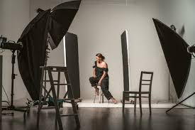
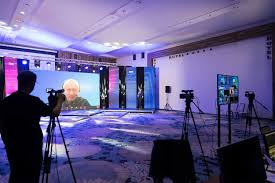

Portfólio

Fashion Shoot - Editorial de Moda
Editorial de moda para a coleção de inverno 2024, com foco em estilos urbanos e minimalistas.
Ver mais

Evento Corporativo - Conferência de Tecnologia
Cobertura fotográfica de um evento de grande porte, registrando momentos importantes.
Ver mais
Retratos Pessoais
Retratos autênticos que capturam a verdadeira essência das pessoas em um ambiente confortável.
Ver mais